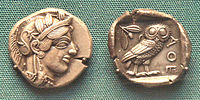
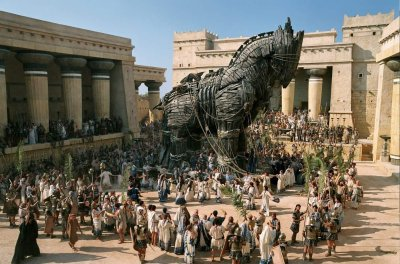
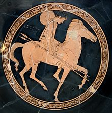
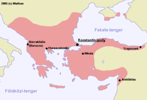

Ókori görögök
Az ókori görög civilizáció történetének (ókori görög történelem) nincs rögzített vagy általánosan elfogadott kezdeti és záró időpontja. Az ókori görög történelem a közhasználatban gyakran a Római Birodalom előtti egész írott görög történelmet jelenti, a szűkebb értelmezés azonban ennél precízebb. Hagyományosan a görög történelmet az első olimpiai játékoktól (i. e. 776) számították. Ez a poliszok kora, amelynek az i. e. 6. századtól kezdődő időszakát a klasszikus görög civilizáció koraként emlegetik.

A trójai háború
A trójai háború fegyveres konfliktus lehetett az ókorban az akhájok és a kisázsiai Trója között. A történet szerint a háború azután tört ki, miután Parisz, Trója hercege elrabolta Helenét, Menelaosz spártai király feleségét. Homérosz műve, az Iliasz a csata meghatározó momentumait mutatja be, melynek célja Trója városának (görögül Ilion) elfoglalása volt a görög csapatok által. A görögök az akhájok vezetésével törzsenként reprezentálták magukat. A történetben csupán 51 napját élhetjük át a 10 éves ostromnak.

Görög művészet
A klasszikus görög civilizáció művészeti fejlődésének kezdete a mükénéi kultúra bukásával és a görög sötét korral esik egyidőbe, később pedig Babilónia, Fönícia és Perzsia művészetének virágzásával. A gazdag görög poliszok fénykorában és a hellenizmus idején a művészet megfelelt a szabad görögök törekvéseinek.

Bizánci Birodalom
A Bizánci Birodalom ókori–középkori államalakulat, mely fénykorában Európán kívül Ázsiára és Afrikára is kiterjedt. A birodalom fővárosa Bizánc, a 20. századig Európában használatos nevén Konstantinápoly, korabeli hivatalos nevén Új-Róma, a mai Isztambul volt. Az egészen 1453-ig fennálló birodalom kulturálisan görög, államiságában római, vallása tekintetében pedig keresztény (ortodox) volt.
